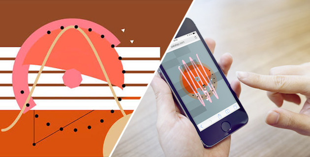
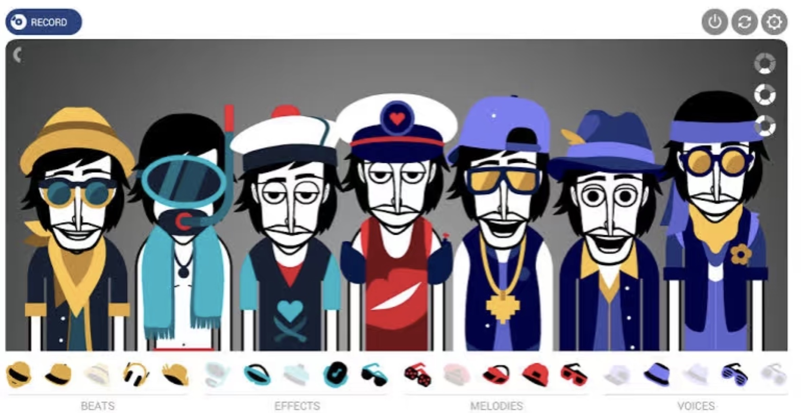

Elaine's Mediated Expression Studio Work
s4151128
Intro Exercise
Hi, my name is Meilin Chen (she/her) - you can just call me Elaine. I come from Shanghai (China). I chose to study digital media is because I want to combine coding and design. My favourite emoji is (*^o^*). I have studied C++, C and Python a few years ago, however I almost forgot them.(^._.^;)՞ ՞
Github
My Github profile is https://github.com/elaineMC1128
In-class experiments
Studio project speculation
Framing
This project explores how music-making can be reimagined as a more intuitive and playful experience, rather than something that requires technical knowledge or formal training. Many traditional music tools rely on structured systems such as timelines, notation, or sequencing, which can make them difficult for beginners to approach. In contrast, contemporary digital media tools increasingly focus on accessibility, allowing users to engage in creative expression through simple and immediate interactions. 
For example, tools like Patatap demonstrate how pressing a single key can generate both sound and visual feedback, creating a strong and immediate connection between action and response. This highlights the importance of feedback in helping users understand how an interactive system works.
Similarly, the Musical Text Editor reinterprets typing as a musical action, showing that creative input does not need to follow traditional musical formats. Instead, everyday actions can be mapped to expressive outputs.
These examples suggest that creative tools are shifting away from precision and control, and towards play, exploration, and reinterpretation of input. Based on this context, this project speculates that music-making can be approached as a spatial and generative interaction, where users do not directly construct sound, but instead influence a system that produces it.
This idea is also informed by early in-class experiments exploring mapping and feedback. The mapping experiment showed that users quickly understand interactions when there is a consistent relationship between movement and outcome. The feedback experiment highlighted how immediate visual and auditory responses help users perceive cause and effect. Together, these insights suggest that an effective expressive tool can be built through simple rules, as long as the relationship between action and response is clear.
Purpose
The purpose of this project is to design a browser-based interactive tool that allows users to generate evolving sound patterns through spatial interaction. The tool takes the form of a pool-like environment viewed from above, where users can place animated fish into the space.
Rather than acting as direct instruments, the fish behave as autonomous agents. Once placed in the pool, they move independently across a tiled surface. The tile lines function as sound triggers, so that when a fish crosses a line, a musical note is produced. At the same time, the line visually reacts through a small ripple or vibration, reinforcing the connection between movement and sound.

Different fish introduce variation into the system. For instance, larger fish may move more slowly and produce lower tones, while smaller fish move faster and generate higher sounds. By choosing how many fish to place, where to position them, and how they interact within the space, users influence the resulting sound patterns.
This interaction model shifts the focus from direct control to system-based interaction. Instead of composing a fixed sequence of notes, users set up conditions in which sound emerges over time. This approach is influenced by tools such as Blob Opera, where users manipulate behaviour rather than individual notes, and Incredibox, where combining elements leads to layered musical outcomes.

Through this design, the project explores how indirect interaction can still produce meaningful creative expression. Users are not removed from the process, but instead engage with it differently—by observing, adjusting, and experimenting with the system.
Worth
The value of this project lies in its exploration of generative creativity and mediated interaction. By reducing the need for technical knowledge, the tool makes music-making more accessible and encourages users to experiment without fear of making mistakes.
Compared to tools that rely on direct input, this project introduces a layer of separation between the user and the sound. The fish act as intermediaries, meaning that sound is not triggered directly, but emerges through behaviour. This creates a more dynamic and less predictable system, where outcomes are shaped over time rather than immediately defined.
This unpredictability is an important aspect of the experience. It allows users to encounter unexpected patterns and moments of discovery, which can make the interaction more engaging. Instead of focusing on control or precision, the tool encourages exploration and curiosity.
Insights from the design experiments also support this approach. The feedback experiment demonstrated that clear and immediate responses help users understand interactions, which is reflected in the visual and audio responses of the tile lines. The mapping experiment showed that spatial relationships can effectively communicate system behaviour, which is applied in the consistent mapping between fish movement and sound triggers.
More broadly, this project contributes to ongoing discussions in digital media design about how tools can support new forms of creative expression. Rather than treating users as performers who execute actions, it positions them as participants within a system. The creative outcome is not something they directly construct, but something they influence.
Ultimately, this project suggests that interactive tools can move beyond traditional models of control and towards more open, exploratory systems. By combining mapping, feedback, and generative behaviour, it proposes an alternative way of engaging with music—one that is visual, spatial, and shaped through interaction over time.